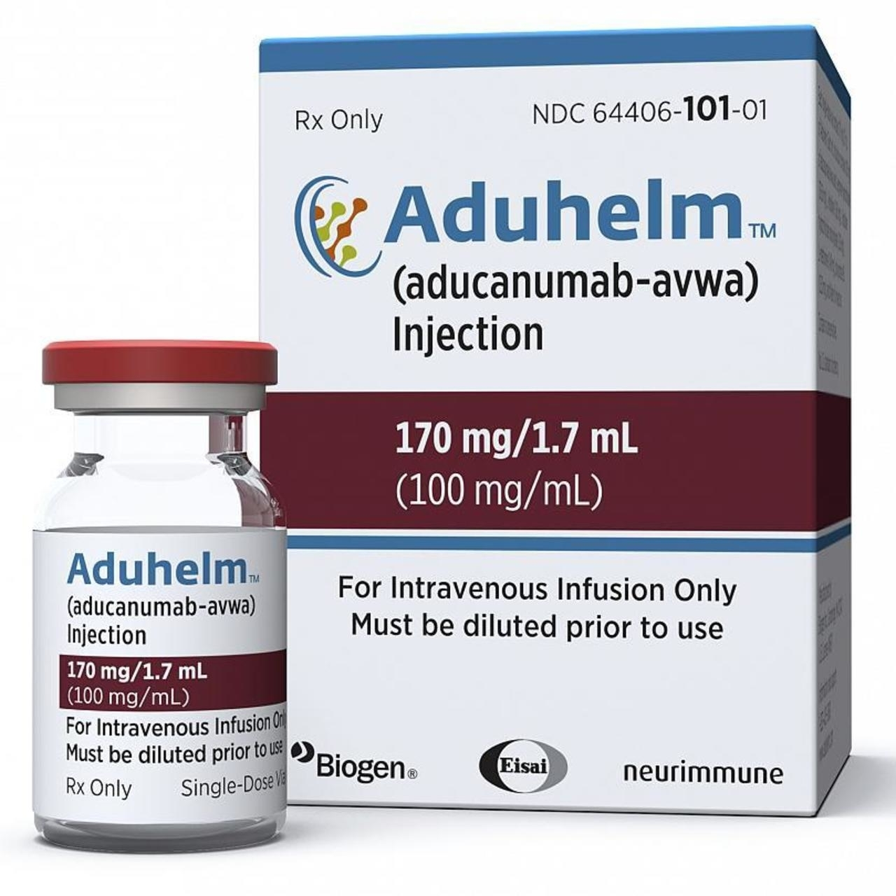

|
El Aduhelm (nombre genérico aducanumab), es el nuevo fármaco para el Alzheimer, aprobado por la FDA, la agencia del medicamento de Estados Unidos. Un parteaguas ya que, además de ser el primer fármaco aprobado desde el 2003, es el primero que se centra en la causa subyacente y busca abordar el deterioro cognitivo, al reducir la acumulación de la proteína beta-amiloide del cerebro.
Su nombre comercial, Aduhelm, y el genérico aducanumab. Un anticuerpo monoclonal desarrollado por el laboratorio norteamericano Biogen. Una revolución ya que además de ser el primer fármaco para Alzheimer aprobado desde el 2003, es el primer tratamiento que busca detener el deterioro cognitivo del cerebro al buscar reducir la acumulación de la proteína beta-amiloide en el tejido cerebral, una de las causas subyacentes de esta enfermedad.
|

|